Визуальная проба · 27 октября 2026 · встроенный image_gen · 9 отдельных генераций.Эксперимент для сравнения. Новые варианты ещё не утверждены. Планёр A предварительный; модельные проекции не проверяются этим пакетом.
Укрупнённые светлые панели, графитовая механика, сдержанный циан. Некоторые пробы сохранили мелкие линии, похожие на трещины: для окончательного чистого покрытия нужна дополнительная правка. Силуэты концептуально сохранены; совпадение геометрии не гарантируется.
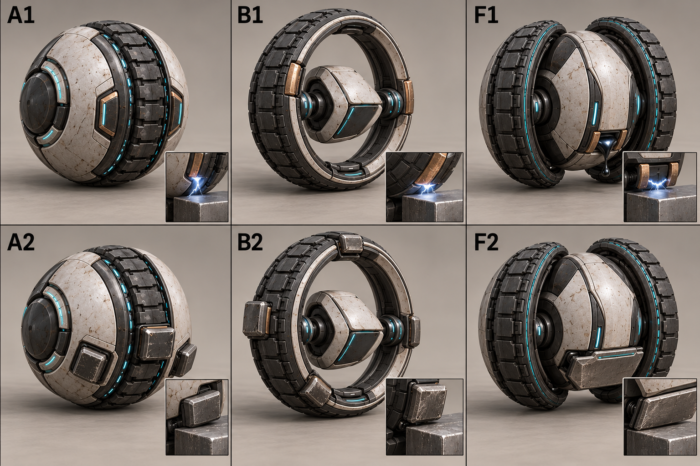
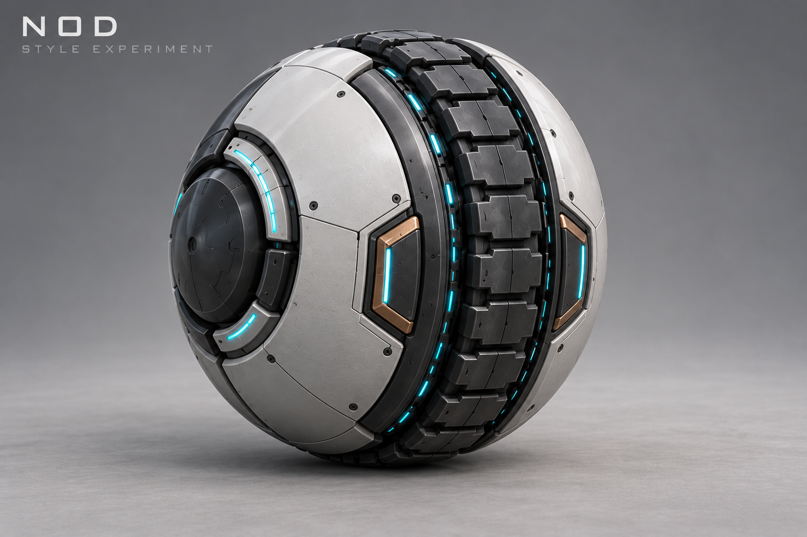
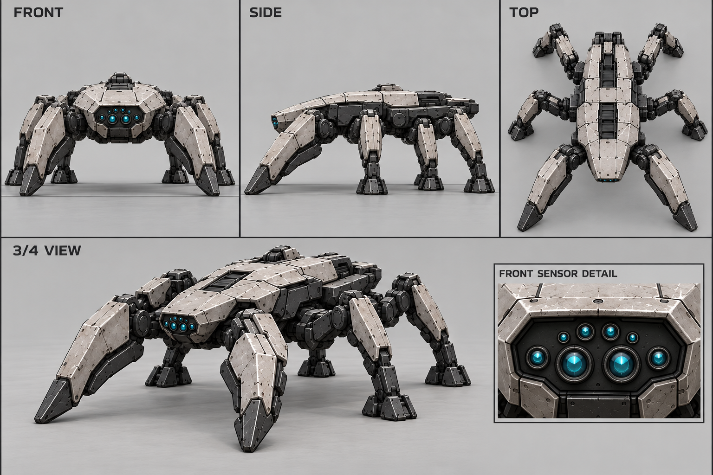
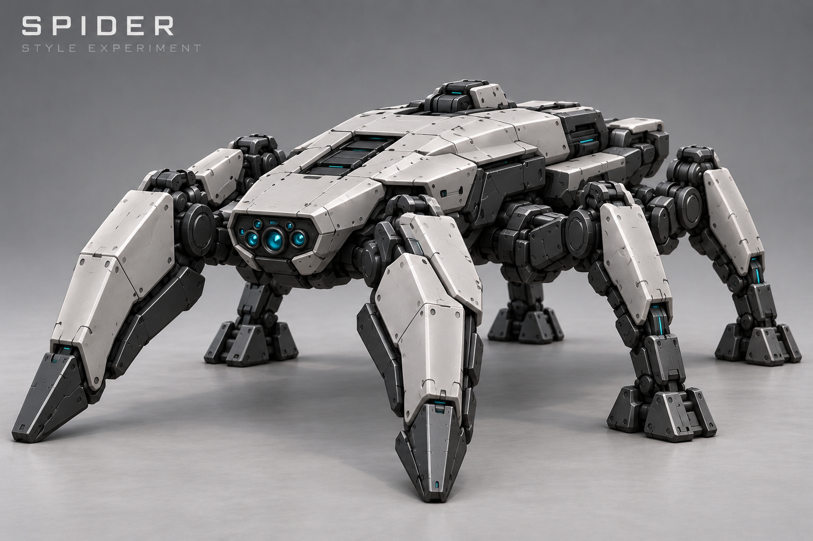
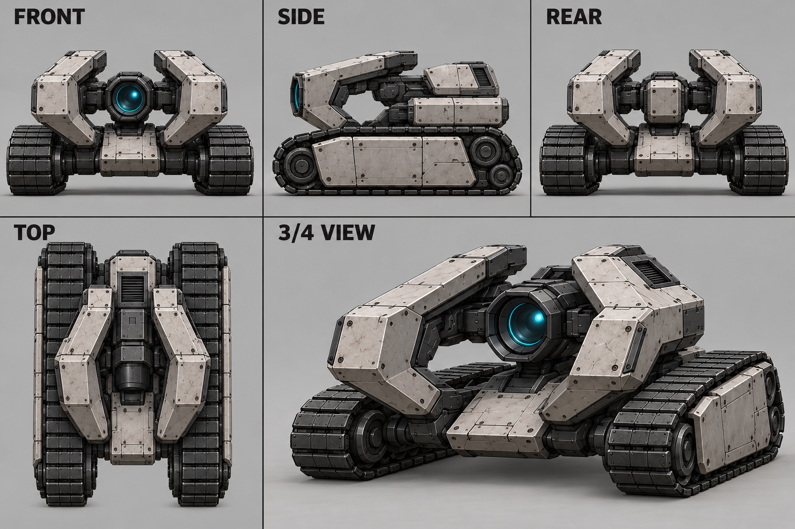
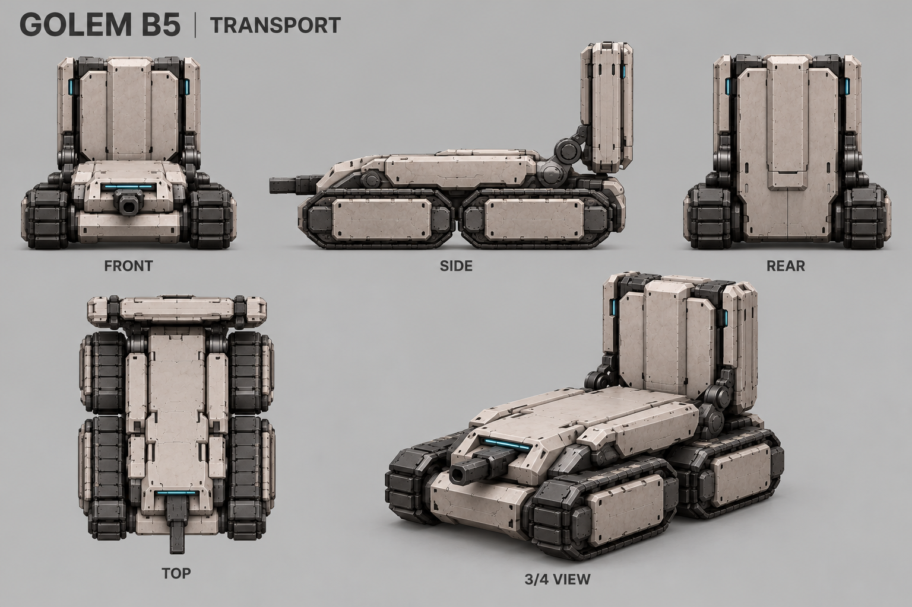
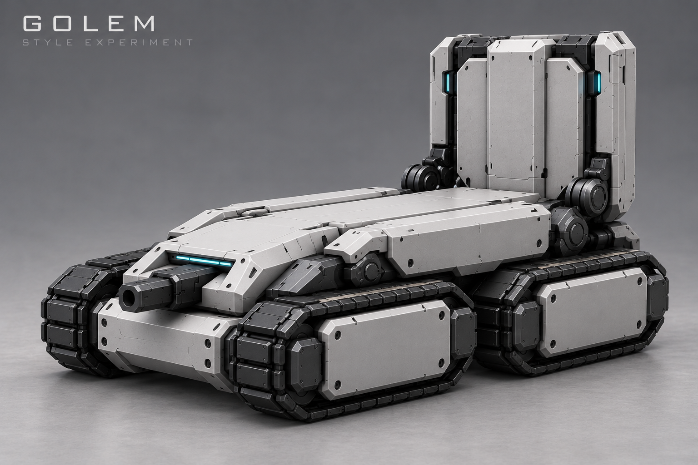
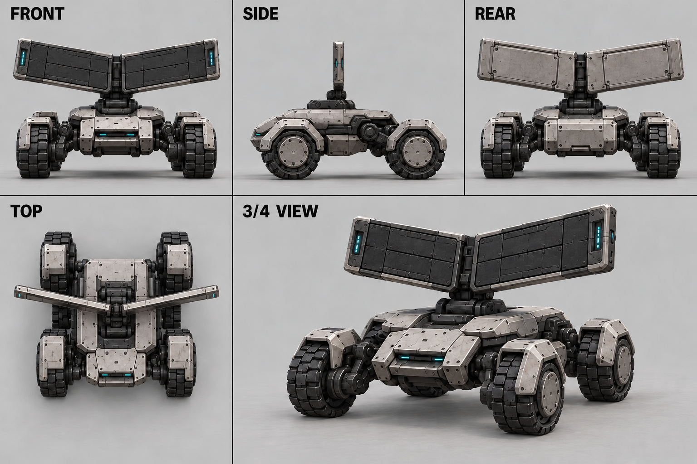
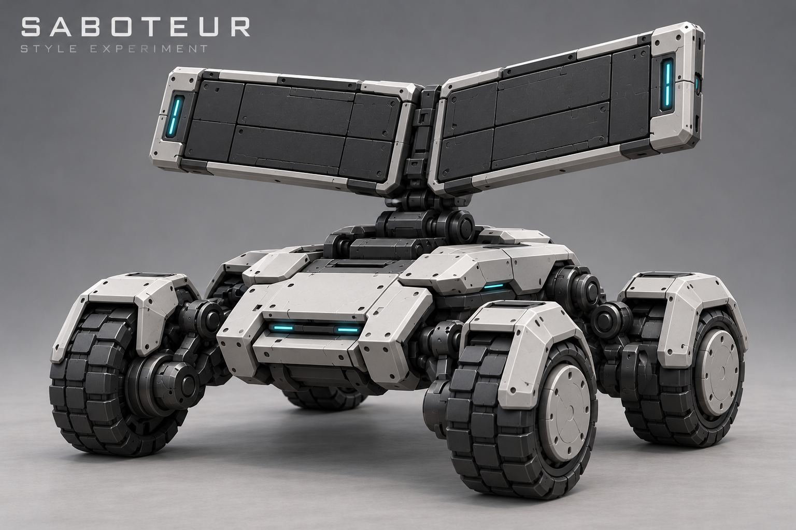
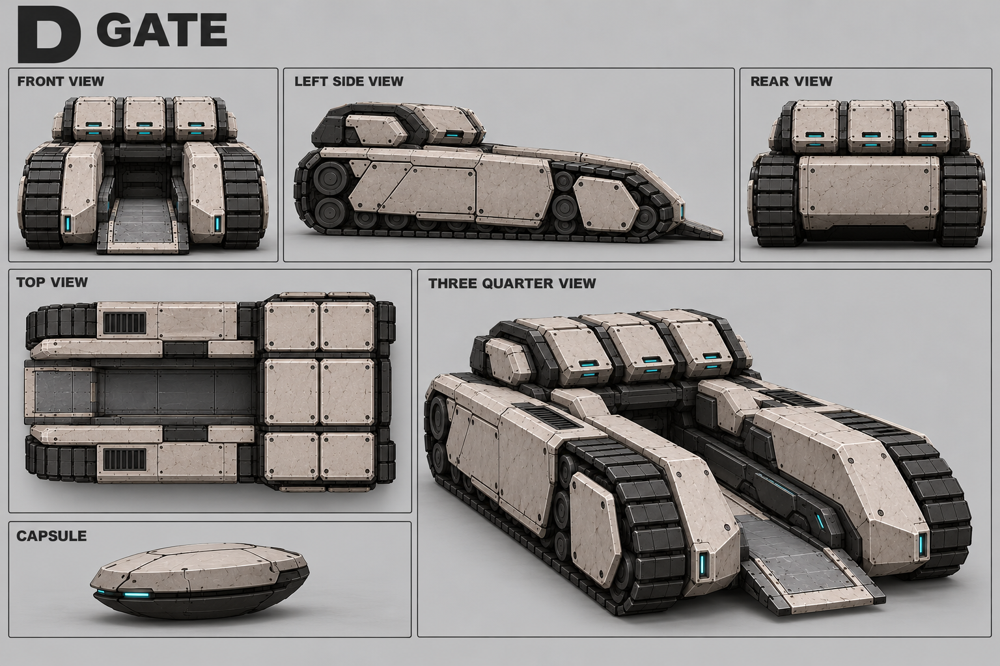
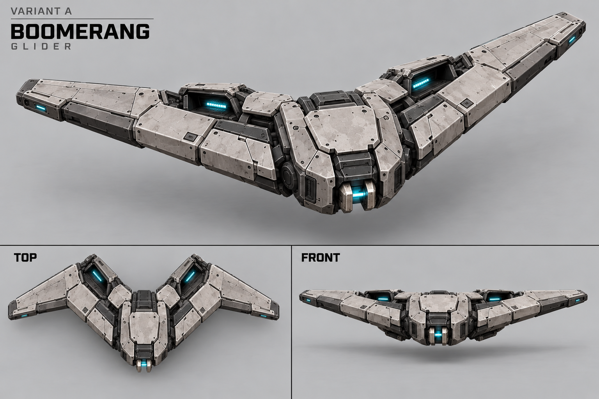
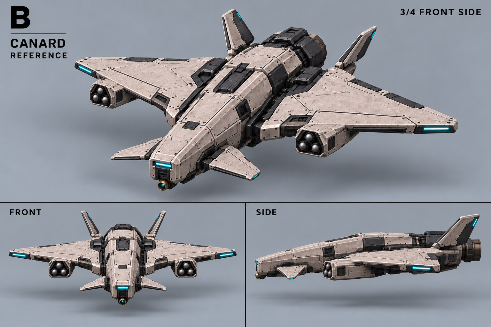
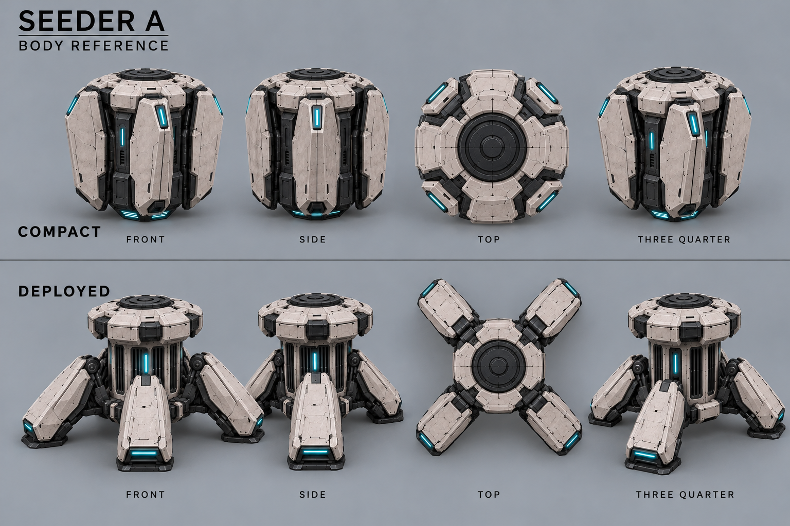
Основная галерея проекта